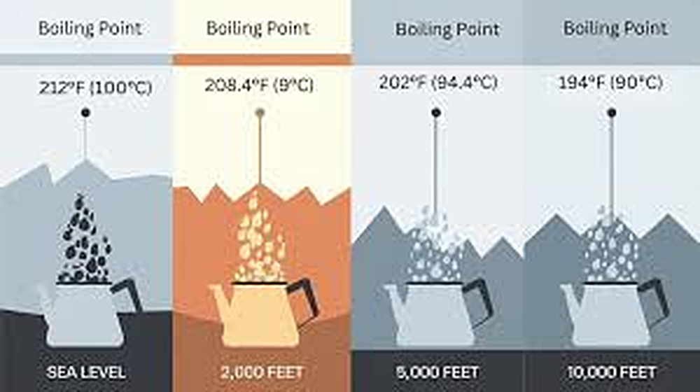
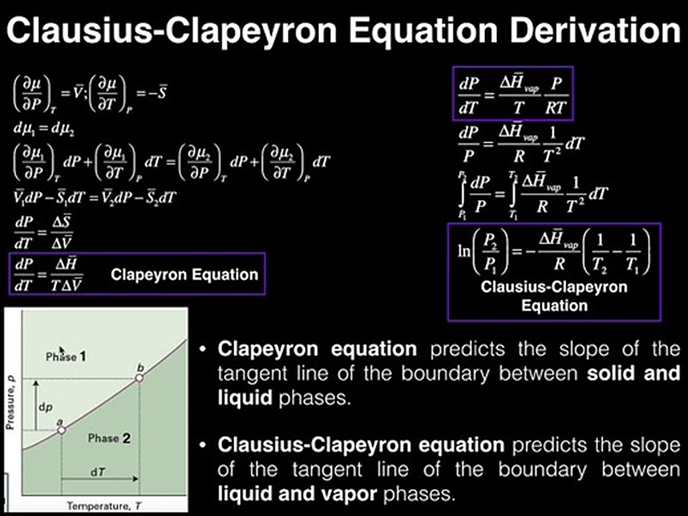
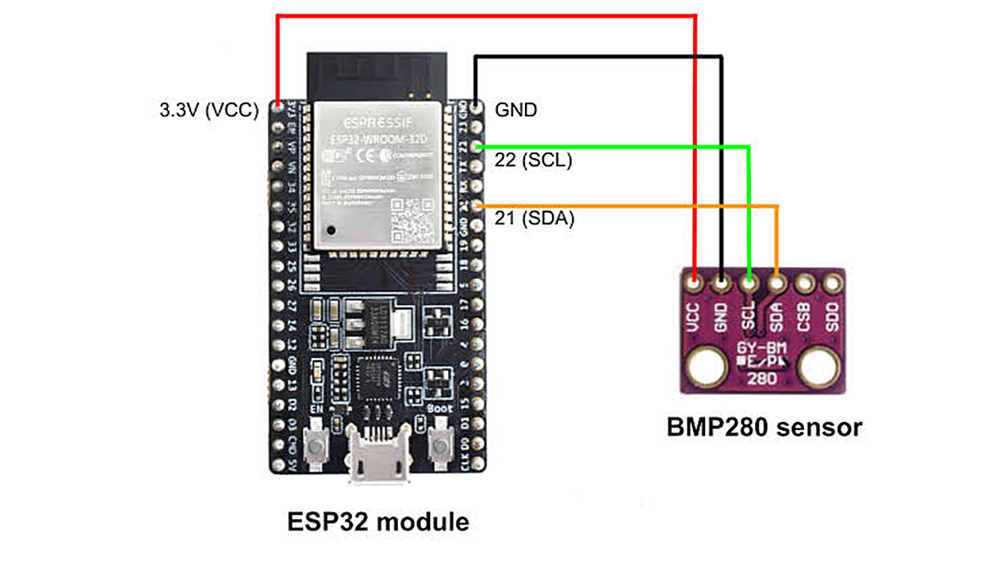
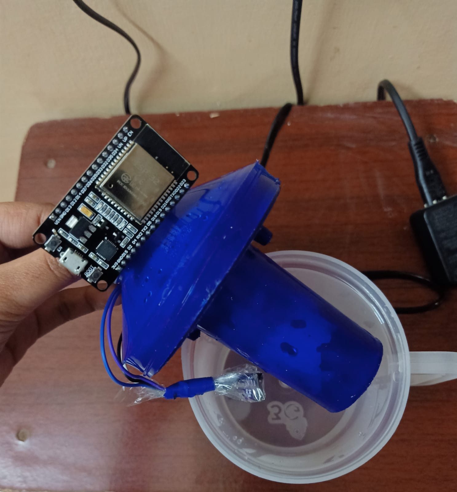
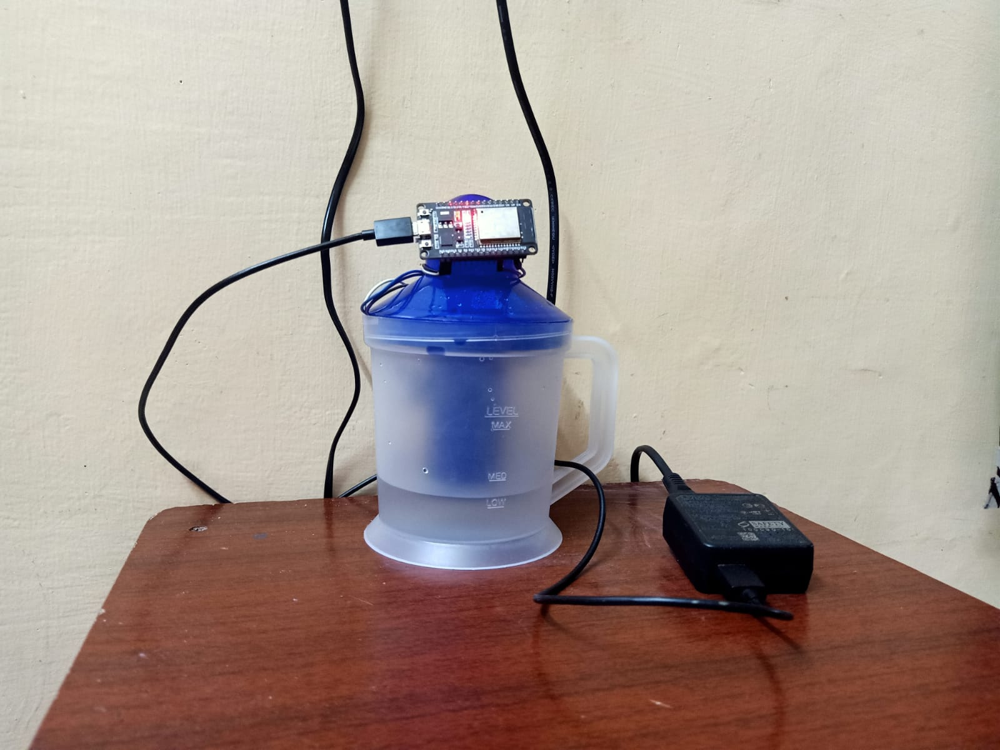

Abstract
Boiling is a fundamental phase transition governed by temperature and pressure (standard pressure 1013 hPa). The Clausius–Clapeyron relation gives a thermodynamic description of how the vapor pressure of a liquid changes with temperature during phase transitions such as boiling or condensation.
This work tests the relation for water with a low-cost Internet of Things (IoT) setup. An airtight steamer acts as a controlled chamber, with a BMP280 sensor mounted under the lid to measure temperature and pressure. An ESP32 microcontroller logs the readings while the water is heated, and the data are checked for the expected ln(P) versus 1/T linear form.
The work shows how a classical 19th-century law can be examined with simple, modern tools, and how affordable hardware can support meaningful experiments in education and engineering.

Research Gap and Objectives
Existing studies rarely combine low-cost IoT systems with scientific rigor, real-time monitoring and clear visualization. This research aims to:
- Design and build an ESP32–BMP280 sensor system in an airtight container for temperature and pressure measurement.
- Develop a web-based platform for data acquisition, visualization and analysis.
- Test the Clausius–Clapeyron relation for water over a defined temperature range.
- Compare experimental results with theoretical predictions and assess data quality.
Theoretical Framework
Statement
“The rate of change of the pressure of a saturated vapor with temperature is proportional to the latent heat of the phase transition and inversely proportional to the product of temperature and the change in specific volume of the two phases.”
Derivation
The relation describes how pressure and temperature are linked at a phase boundary, such as liquid–gas. It lets the latent heat of a transition be calculated from measurable quantities. The derivation starts from the Gibbs free energy G: for a system at constant temperature and pressure, two phases (e.g. liquid and vapor) are in equilibrium when their Gibbs free energies are equal.

Experimental Setup
Aim
Clausius and Clapeyron aimed to understand how vapor pressure changes with temperature and to use that change to calculate the latent heat of vaporization.
Hardware
The core hardware is an ESP32-WROOM-32 microcontroller and a BMP280 sensor, which measures both temperature and pressure. The two are connected over I²C (SDA on GPIO 21, SCL on GPIO 22) with a shared 3.3 V supply and ground. The BMP280 is mounted on the underside of the airtight steamer lid. A small hole in the lid lets the wires pass through without letting steam escape.

Assembly


Procedure
Water is heated gradually inside the sealed steamer. As it boils, steam accumulates and raises the pressure in the container. The BMP280 records temperature and pressure continuously. The ESP32 timestamps each reading, stores it as CSV and serves the file over Wi-Fi for download and live monitoring. Readings from steady boiling periods are used for analysis.
Firmware
The ESP32 logger (firmware/esp32_bmp280_logger.ino) reads the BMP280 every 10 seconds, timestamps
each reading via NTP (GMT+5:30), appends it to bmp280.csv on SPIFFS, and serves the file at
/bmp280.csv. Wi-Fi credentials are replaced with placeholders.
#include <Wire.h>
#include <Adafruit_BMP280.h>
#include <FS.h>
#include <SPIFFS.h>
#include <WiFi.h>
#include "time.h"
#include <WebServer.h> // built-in ESP32 library
Adafruit_BMP280 bmp; // I2C interface
// Replace with your WiFi credentials (kept out of the repository)
const char* ssid = "YOUR_WIFI_SSID";
const char* password = "YOUR_WIFI_PASSWORD";
// NTP server and offset
const char* ntpServer = "pool.ntp.org";
const long gmtOffset_sec = 19800; // GMT+5:30 (India)
const int daylightOffset_sec = 0;
// Web server on port 80
WebServer server(80);
void setup() {
Serial.begin(115200);
delay(1000);
// Mount SPIFFS
if (!SPIFFS.begin(true)) {
Serial.println(" SPIFFS Mount Failed!");
while (1);
}
Serial.println(" SPIFFS Mounted.");
// Connect WiFi
WiFi.begin(ssid, password);
Serial.print("Connecting to WiFi");
while (WiFi.status() != WL_CONNECTED) {
delay(500);
Serial.print(".");
}
Serial.println("\n WiFi connected.");
Serial.print("ESP32 IP Address: ");
Serial.println(WiFi.localIP());
// Init time via NTP
configTime(gmtOffset_sec, daylightOffset_sec, ntpServer);
Serial.println("Time synchronized via NTP.");
// Initialize I2C explicitly
Wire.begin(21, 22);
// Initialize BMP280
if (!bmp.begin(0x76)) {
Serial.println(" BMP280 not found. Check wiring!");
while (1);
}
Serial.println("BMP280 detected!");
// Create CSV if it doesn't exist
if (!SPIFFS.exists("/bmp280.csv")) {
File file = SPIFFS.open("/bmp280.csv", FILE_WRITE);
if (file) {
file.println("timestamp,temperature_C,pressure_hPa");
file.close();
Serial.println(" Created bmp280.csv with header.");
} else {
Serial.println("Failed to create file.");
}
}
// Setup web server route
server.on("/bmp280.csv", HTTP_GET, []() {
File file = SPIFFS.open("/bmp280.csv", "r");
if (!file) {
server.send(404, "text/plain", "File not found");
return;
}
// Tell browser this is a CSV file for download
server.streamFile(file, "text/csv");
file.close();
});
server.begin();
Serial.println("Web server started. Access file at: http://" + WiFi.localIP().toString() + "/bmp280.csv");
}
void loop() {
// Handle web requests
server.handleClient();
// Read sensor values
float t = bmp.readTemperature();
float p = bmp.readPressure() / 100.0F;
// Get formatted time
struct tm timeinfo;
if (!getLocalTime(&timeinfo)) {
Serial.println("Failed to obtain time");
delay(10000);
return;
}
char timeString[30];
strftime(timeString, sizeof(timeString), "%Y-%m-%d %H:%M:%S", &timeinfo);
// Append to CSV
File file = SPIFFS.open("/bmp280.csv", FILE_APPEND);
if (file) {
file.printf("%s,%.2f,%.2f\n", timeString, t, p);
file.close();
Serial.printf("Logged -> %s | T: %.2f C | P: %.2f hPa\n", timeString, t, p);
} else {
Serial.println(" Failed to open bmp280.csv for writing!");
}
delay(10000); // log every 10 seconds
}
Sample Serial Log
Format of the lines printed on each logging cycle, taken from the first readings in bmp280_data.csv:
Logged -> 2025-08-31 17:29:00 | T: 50.11 C | P: 1010.74 hPa
Logged -> 2025-08-31 17:29:10 | T: 57.87 C | P: 1020.42 hPa
Logged -> 2025-08-31 17:29:20 | T: 65.93 C | P: 1029.56 hPa
Logged -> 2025-08-31 17:29:30 | T: 73.43 C | P: 1040.00 hPaDemonstration
Data and Results
The table and plot below use the logged dataset data/bmp280_data.csv: 10 readings taken during
heating, from 50.11 °C to 119.56 °C. Pressure is converted to Pa and temperature to kelvin. The linear fit is
ln(P) = a + b·(1/T).
Measured Readings
| Timestamp | T (°C) | P (hPa) | 1/T (K⁻¹) | ln(P / Pa) |
|---|
Interpretation
Mathematical Model
The Clausius–Clapeyron equation in logarithmic form is:
where
- P is the vapor pressure
- T is the absolute temperature (K)
- ΔHvap is the latent heat of vaporization
- R is the universal gas constant (8.314 J/(mol·K))
- C is an integration constant
Plotting ln(P) against 1/T should give a straight line with slope −ΔHvap/R. The latent heat is therefore ΔHvap = −b·R, where b is the fitted slope.
Assumptions and Limitations
Assumptions of the relation
- The process is slow enough that liquid and vapor stay in equilibrium.
- The latent heat stays roughly constant over the temperature range studied.
- The liquid volume is much smaller than the vapor volume and can be neglected.
- The steam behaves as an ideal gas.
Practical limitations
- Temperature and pressure must be uniform inside the steamer; uneven steam affects readings.
- The BMP280 is specified at about ±1 °C and ±1 hPa. This resolves the trend but limits precision.
- Readings were averaged during steady boiling to reduce noise.
- The sensor reads the total pressure in the container, not the vapor pressure alone. Air present in the steamer adds to the reading.
Conclusion
Pressure and temperature readings were logged with an ESP32 and BMP280 during heating of water in an airtight steamer. Over the measured range, ln(P) follows a straight line against 1/T (R² ≈ 0.997), which matches the qualitative form of the Clausius–Clapeyron relation.
The slope from this dataset gives a latent heat far below the accepted value for water (about 40.7 kJ/mol). This means the present data confirm the linear trend but do not yet verify the magnitude of the latent heat. The likely causes are that the sensor reads total pressure including air, and that the temperature range is narrow. Further runs with a wider range, and with a separate reference for the air contribution, are needed for a quantitative test.
The work still shows that low-cost IoT hardware can capture the main behavior of a classical thermodynamic law and make it interactive for teaching.
Future Scope
- Science education: turns abstract thermodynamics into hands-on work. Students can build, code and analyze the experiment.
- Citizen science: low-cost, portable setups allow local monitoring of temperature, pressure and humidity.
- Remote monitoring: the system can be adapted to agricultural, industrial or atmospheric use, with web-based access from hard-to-reach sites.
The approach links classical experiments with modern IoT and web tools, offering a reproducible and accessible model for low-cost automated experimentation.